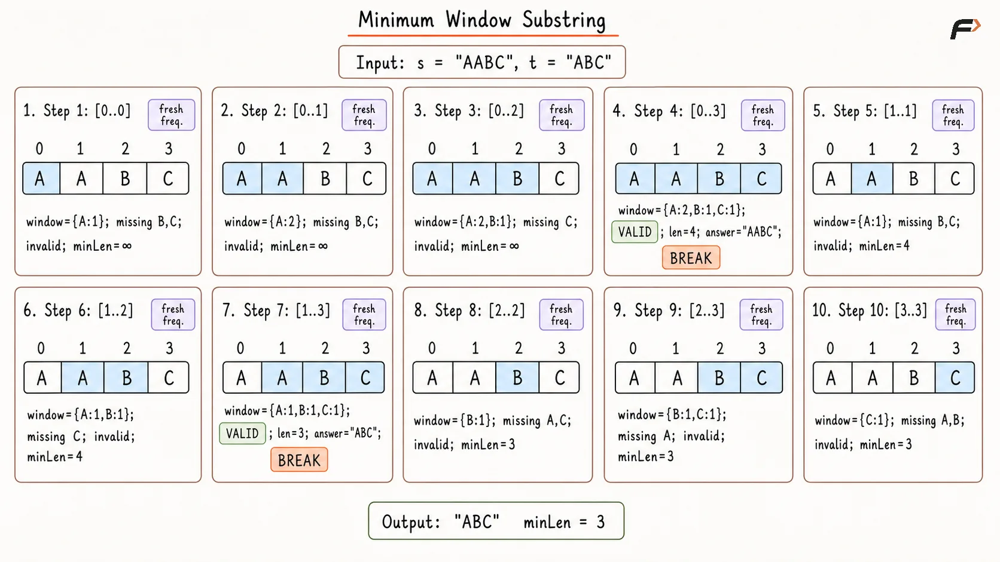
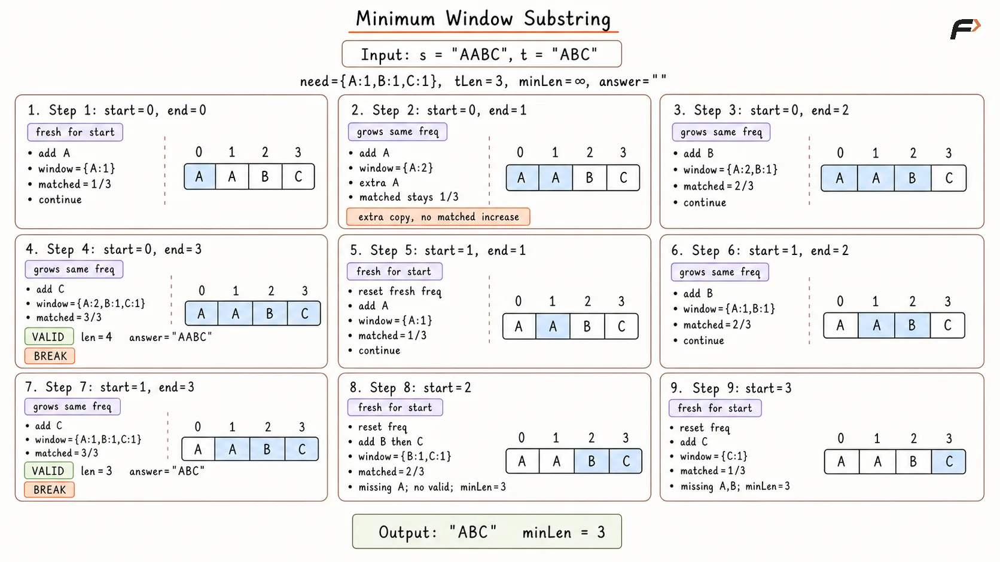
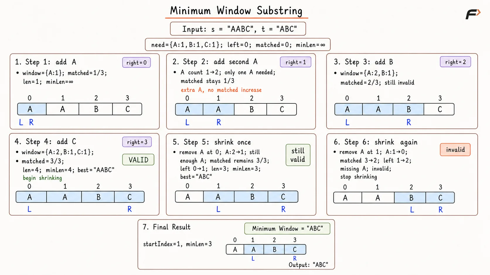

Minimum Window Substring
Given two strings s and t, return the minimum window substring of s such that every character in t is included in the window.
If there is no such substring, return an empty string.
The answer must include all characters of t with the same frequency.
Example 1
Input: s = "ADOBECODEBANC", t = "ABC"
Output: "BANC"
Explanation: The minimum window substring "BANC" contains all characters 'A', 'B', and 'C'.
Example 2
Input: s = "a", t = "a"
Output: "a"
Explanation: The whole string contains all characters of t.
Example 3
Input: s = "a", t = "aa"
Output: ""
Explanation: String s contains only one 'a', but t needs two 'a' characters.
Brute Force Approach
In this approach, every possible substring of s is checked.
For each substring, we verify whether it contains all characters of t with the required frequency. This frequency part is important because t can contain duplicate characters.
For example, if t = "AABC", then a valid window must contain two 'A' characters, one 'B', and one 'C'. Having only one 'A' is not enough.
If a substring satisfies all required character frequencies, it is valid. Since the problem asks for the minimum window, we update the answer only when a smaller valid substring is found.
Algorithm
The sizes of s and t are stored in n and m. If s is empty, t is empty, or n is smaller than m, an empty string is returned because a valid window cannot exist.
A frequency array need is created for string t. This stores how many times each character is required in the window.
Two variables are initialized: minLength is set to a very large value to store the smallest valid window length, and answer is initialized as an empty string to store the best window found so far.
Two loops are used to generate every possible substring of s. The first loop chooses the starting index start, and the second loop chooses the ending index end.
Check whether every character required by
needappears inwindowwith at least the required frequency.If the substring is valid, update
minLengthandanswerwhen it is smaller than the current best, then break the currentendtraversal because extending the samestartcan only produce a longer valid window.
Dry Run

Minimum Window Substring Brute Approach Dry Run.png
Solution
#include <bits/stdc++.h>
using namespace std;
class Solution {
private:
// Checks whether the current window contains all required characters.
bool isValid(
const vector<int>& need,
const vector<int>& window
) {
// Compare every ASCII character with its required frequency.
for (int i = 0; i < 128; i++) {
// The window is invalid if any required count is missing.
if (window[i] < need[i]) {
return false;
}
}
return true;
}
public:
// Finds the minimum valid window by checking every substring.
string minWindow(string s, string t) {
int n = s.size();
int m = t.size();
// A valid window cannot exist in these cases.
if (n == 0 || m == 0 || n < m) {
return "";
}
vector<int> need(128, 0);
// Store the required frequency of every character in t.
for (char ch : t) {
need[(unsigned char)ch]++;
}
int minLength = INT_MAX;
string answer = "";
// Choose every possible starting index.
for (int start = 0; start < n; start++) {
// Choose every possible ending index for this start.
for (int end = start; end < n; end++) {
vector<int> window(128, 0);
// Rebuild frequencies for the selected substring.
for (int i = start; i <= end; i++) {
window[(unsigned char)s[i]]++;
}
// The first valid window is shortest for this start.
if (isValid(need, window)) {
int currentLength = end - start + 1;
// Keep the smallest valid window found so far.
if (currentLength < minLength) {
minLength = currentLength;
answer = s.substr(start, currentLength);
}
break;
}
}
}
return answer;
}
};
int main() {
string s = "ADOBECODEBANC";
string t = "ABC";
Solution solution;
cout << solution.minWindow(s, t) << endl;
return 0;
}Complexity Analysis
Time Complexity: O(N³), where N is the length of s. There are O(N²) possible substrings, and checking each substring can take O(N) time.
Space Complexity: O(1), because fixed-size frequency arrays are used for ASCII characters.
Better Approach
Instead of checking every substring by counting its characters from scratch, we can build the window while moving forward from each starting index.
For every start index, we move end toward the right and keep updating the frequency of the current window.
A variable matched is used to count how many required characters from t have been satisfied in the current window. This count includes duplicate characters also.
For example, if t = "AA", then matched must become 2, not 1. That is why matched is compared with the length of t, not the number of distinct characters.
Once matched becomes equal to the length of t, the current window contains all required characters. For that fixed start index, this is the smallest valid window because end is moving from left to right. So, we update the answer and stop expanding for that start.
Algorithm
The sizes of s and t are stored in n and m. If s is empty, t is empty, or n is smaller than m, an empty string is returned.
A frequency array need is created to store the required frequency of every character in t. This helps us know how many copies of each character are needed.
Two variables are initialized: minLength is set to a very large value and answer is initialized as an empty string.
The string s is traversed using start as the starting index. For every start, a fresh window frequency array is created, and matched is initialized with 0.
The end pointer moves from start to the end of s. For every s[end], its frequency is increased in the window array. If this character is required and its window frequency is not more than the required frequency, matched is increased.
When matched becomes equal to m, the current window contains all characters of t with correct frequency. Its length is calculated, and answer is updated if this window is smaller. Then the loop stops for this start index because extending further will only increase the window length.
Dry Run

Minimum Window Substring Better Approach Dry Run.png
Solution
#include <bits/stdc++.h>
using namespace std;
class Solution {
public:
// Finds the minimum window by growing from every starting index.
string minWindow(string s, string t) {
int n = s.size();
int m = t.size();
// A valid window cannot exist in these cases.
if (n == 0 || m == 0 || n < m) {
return "";
}
vector<int> need(128, 0);
// Store how many copies of each character are required.
for (char ch : t) {
need[(unsigned char)ch]++;
}
int minLength = INT_MAX;
string answer = "";
// Try every index as the beginning of a window.
for (int start = 0; start < n; start++) {
vector<int> window(128, 0);
int matched = 0;
// Expand the window one character at a time.
for (int end = start; end < n; end++) {
unsigned char current = s[end];
window[current]++;
// Count only copies that are still required by t.
if (
need[current] > 0 &&
window[current] <= need[current]
) {
matched++;
}
// All required copies are present in the current window.
if (matched == m) {
int currentLength =
end - start + 1;
// Keep the smallest valid window found so far.
if (currentLength < minLength) {
minLength = currentLength;
answer = s.substr(
start,
currentLength
);
}
break;
}
}
}
return answer;
}
};
int main() {
string s = "ADOBECODEBANC";
string t = "ABC";
Solution solution;
cout << solution.minWindow(s, t) << endl;
return 0;
}Complexity Analysis
Time Complexity: O(N²), where N is the length of s. For every starting index, the ending index may move toward the right until a valid window is found.
Space Complexity: O(1), because fixed-size frequency arrays are used for ASCII characters.
Optimal Approach
A sliding window expands from the right until it contains all characters of t with the required frequencies.
Once the window becomes valid, move left forward repeatedly while validity is preserved. Each valid shrink gives a smaller candidate, so the best answer is updated before removing the next left-side character.
Frequency arrays and matched allow validity to be checked in constant time without comparing all character counts after every movement.
Algorithm
Store the lengths of
sandtinnandm. Return an empty string when either string is empty orn < m.Build
needto store the required frequency of every character int, and createwindowto track frequencies inside the current sliding window.Initialize
left = 0,matched = 0,minLengthwith a very large value, andstartIndex = -1.Move
rightfrom0ton - 1and adds[right]towindow. If this character is required and its new frequency does not exceed its required frequency, incrementmatched.While
matched == m, the current window contains every required character. UpdateminLengthandstartIndexif the current window is smaller than the best one found so far.Remove
s[left]while shrinking. If that character is required and its frequency becomes smaller thanneed, decrementmatchedbecause the window has just become invalid. Moveleftforward and continue shrinking while the window remains valid.After
rightfinishes, return an empty string ifstartIndex == -1; otherwise, return the substring beginning atstartIndexwith lengthminLength.
Dry Run

Minimum Window Substring Optimal Approach Dry Run.png
Solution
#include <bits/stdc++.h>
using namespace std;
class Solution {
public:
// Finds the minimum valid substring using a sliding window.
string minWindow(string s, string t) {
int n = s.size();
int m = t.size();
// A valid window cannot exist in these cases.
if (n == 0 || m == 0 || n < m) {
return "";
}
vector<int> need(128, 0);
vector<int> window(128, 0);
// Store how many copies of each character are required.
for (char ch : t) {
need[(unsigned char)ch]++;
}
int left = 0;
int matched = 0;
int minLength = INT_MAX;
int startIndex = -1;
// Expand the right boundary across the complete string.
for (int right = 0; right < n; right++) {
unsigned char current = s[right];
window[current]++;
// Count the new character only if a required copy is satisfied.
if (
need[current] > 0 &&
window[current] <= need[current]
) {
matched++;
}
// Shrink while every required character is still satisfied.
while (matched == m) {
int currentLength =
right - left + 1;
// Keep the smallest valid window found so far.
if (currentLength < minLength) {
minLength = currentLength;
startIndex = left;
}
unsigned char leftChar = s[left];
window[leftChar]--;
// Losing a required copy makes the window invalid.
if (
need[leftChar] > 0 &&
window[leftChar] < need[leftChar]
) {
matched--;
}
left++;
}
}
// No window contained every required character.
if (startIndex == -1) {
return "";
}
return s.substr(startIndex, minLength);
}
};
int main() {
string s = "ADOBECODEBANC";
string t = "ABC";
Solution solution;
cout << solution.minWindow(s, t) << endl;
return 0;
}Complexity Analysis
Time Complexity: O(N + M), where N is the length of s and M is the length of t. The string t is processed once, and every character of s enters and leaves the sliding window at most once.
Space Complexity: O(1), because fixed-size frequency arrays are used for ASCII characters.
FAQs
Q1. Why do we need frequency counts in this problem?
Frequency counts are needed because t may contain duplicate characters. A window must contain every character of t with the same required frequency.
Q2. Why is checking only character presence not enough?
If t = "AABC", then a valid window must contain two A characters. A window with only one A is not valid, even if it contains B and C.
Q3. Why do we increase matched only when window frequency is not greater than required frequency?
Extra copies of a character do not help satisfy t further. For example, if only one A is required, the second extra A should not increase matched.
Q4. Why does the Optimal Approach shrink the window while it remains valid?
The first valid window for a right boundary may contain unnecessary characters on the left. Repeated shrinking removes them and finds the smallest valid window ending at that right position.
Q5. Why is matched decreased only when a frequency falls below need?
Removing an extra copy does not make the window invalid. matched should decrease only when one of the required copies is actually lost.